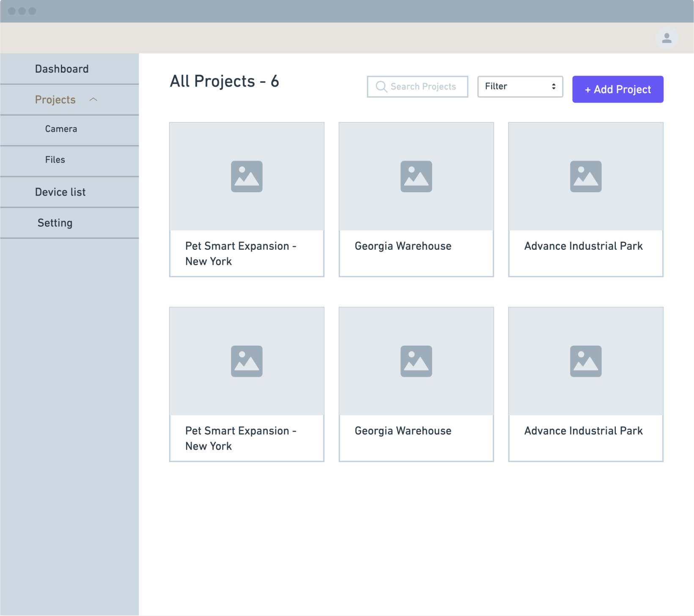
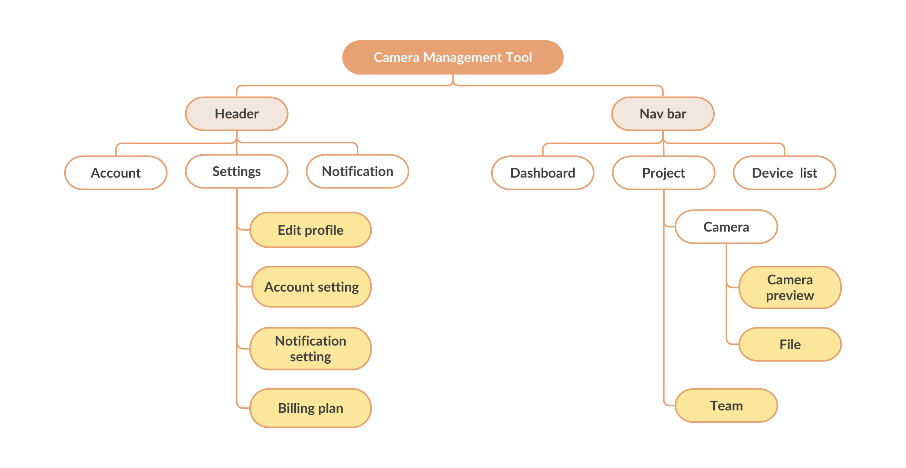

相機管理工具
.png)
相機管理工具（Camera Management Tool）是在台大與工程縮時攝影機公司 Brinno 產學合作專案中設計的平台，我們的目標是建立一個讓營建人員能夠有效管理不同專案中縮時攝影機的平台。透過相機管理工具，營建人員能夠遠端控制相機設定、檢視拍攝畫面、上傳照片並分享拍攝檔案給業主，節省原本需要到工地現場監控相機的時間與人力，提升工作效率。
UI/UX 設計實習生
工程師 * 2
設計師 * 2
Figma
Miro
2022 10 月 - 2023 6 月

法律規定營建公司必須在所有工程項目中架設工程攝影機。除了確保施工人員的安全，也可以藉此監控施工進度。然而，目前管理工程攝影機的方式非常耗時，相關人員必須親自到現場檢視相機拍攝畫面、相機電量和記憶體使用情形。在人手不足的情況下，常常無法及時處理相機畫面被阻擋或電量及記憶體不足的問題，導致拍攝的畫面不符合業主需求或法律規定。因此，工程縮時攝影機公司 Brinno 希望開發一款專門用來管理工程攝影機的平台，讓營建專案的業主可以即時查看相機狀態並有效率地管理不同專案中的相機。
我們進行了 5 場訪談，受訪者包含 3 位營建公司經理、1 位營建工程師與 1 位自由接案攝影師。我們在訪談中採用使用者旅程圖 （User Journey Map，簡稱：UJM）為架構的原因與流程如下：
1. 使用者難以察覺相機狀況，導致拍攝畫面無法使用。
「下雨畫面不清楚，太陽出來又反光，很多畫面不能用最後都剪掉。」
2. 使用者因為人力不足，難以頻繁到現場設定相機。
「不可能每天去工地看相機，通常一到兩個月才會去一次。」
3. 使用者認為現在的管理方式不易管理多台相機，需要改進。
「之前廠商多針對個人設計，但營建商會有多台相機需要管理，最好的方式是分不同階段呈現。」
4. 使用者經常擔心相機設定在和客戶分享時被更動。
「分享相機畫面給業主時，設定容易被更動。」
在訪談後我們發現營建公司人員較少擔任架設與管理工程攝影機主要負責人，這些工作通常交由專業的攝影師處理。於是，我們決定從攝影師的角度出發進行後續的設計發想，而人物誌能讓我們更全面的探索使用者需求、挫折以及想法。.
在開始發想平台功能時，我想到監控旅遊景點或是家庭安全的即時攝影機平台，和工程攝影機管理會需要的功能非常相似。因此，我從策馬特 webcam 跟 Umbo TruePlatform 汲取設計靈感。
綜合使用者研究與市場分析的發現，我重新檢視了人物誌，並提出以下能夠滿足使用者需求的平台功能。
在有了平台功能的初步想法之後，我繪製了故事板，以視覺化的方式呈現使用者在專案不同階段和功能的互動。

透過線框稿，我嘗試將平台功能呈現在頁面上。我最初的想法是使用者從 Login 頁面登入後會被導引到呈現專案中所有相機的 Project 頁面。在點擊任一相機後，使用者即會進入 Camera Preview 頁面，檢視相機畫面和狀態，也可以設定相機排程。從 Camera Preview 頁面可以導引到 File 頁面，在此頁面中可以上傳並分享相機拍攝檔案。

在與團隊討論後，我們做了兩個更動。首先，我們增加了 Dashboard 和 Device list 頁面，因此使用者可以以專案或是設備為單位去管理相機。而因為技術上的限制，將視角對比功能從 Camera Preview 頁面移除。
Dashboard

Project
Device List

Camera Preview

File

Dashboard
Project
Device List

Camera Preview

File
下方的 site map 呈現了最後平台的架構。從導航列可以前往到主要的頁面，包含 Dashboard、Project、Device list 頁面。在每個專案底下都有 Camera、File，和 Team。 Header 包含了個人化設定像是 Profile、Settings，以及 Notification。我專注在 File、Team、Settings 以及 Camera preview 的設計，在下方標示為黃色。
在 File 頁面中最主要的兩個行為即是上傳與分享檔案。因此，我嘗試不同設計以優化這些任務的流程，並迭代頁面的 UI。
一開始的想法是使用者可以將檔案拖曳進彈出式視窗上傳檔案，但團隊認為彈出式視窗上傳的區域太小，對於一次要上傳多個檔案的使用者來說較不方便。於是在第二個版本的設計中，我將上傳方式改成直接將檔案拖曳至頁面的方式。
v1: 彈出式視窗
彈出式視窗對於第一次的使用者較為直覺

上傳區域對於要一次上傳大量檔案的使用者不方便
需要等到所有檔案結束上傳後才能關閉視窗
v2: 直接將檔案拖曳至頁面

更多空間可以拖曳檔案，且使用者可以在等待上傳的同時進行其他任務
我提出了兩種分享檔案的方式，考量到在營建專案中，多數業主都是使用電腦去查看相機拍攝的檔案，b（透過連結分享）會是比較好的選擇。
a. 透過 QR code 分享
b. 透過連結分享

可以直接在營建工地掃描 QR code

對於使用電腦的使用者更方便
我的初步想法是顯示每個檔案的縮圖，方便使用者辨識檔案的差異。但在描繪出 UI 之後發現這樣會讓畫面變得凌亂，且縮時攝影會產生大量相同的縮圖，反而很難從中分辨檔案的差異。於是，我改為使用像是檔案格式等指標去分辨每個檔案。
v1: 顯示相片縮圖

一次顯示大量相似圖片讓人困惑
v2: 根據檔案格式顯示相應的 icon

讓畫面變得更簡潔，也可以用 icon 去區分檔案格式
1. 探索兩種權限管理的方式
若是採用功能型的權限管理，使用者可以為專案成員設定不同功能（專案、相機、檔案）的權限（編輯、檢視）。而若採用角色型的權限管理，每個角色的權限是先定義好的，團隊負責人可以將定義好的角色分配給專案成員（成員、客人）。為了提升開發效率、簡化權限管理的操作，我們採用角色型的權限管理。
a. 功能型

有較大彈性的客製化
需要手動為每個功能設定權限
b. 角色型

管理上更為簡單、直覺
提升開發效率
2. 定義角色與權限
在決定權限管理方式後，我進而與團隊一同設定角色與權限。我們發現在營建專案中通常有三個主要的角色，分別為擁有所有權限的專案負責人、負責上傳相機檔案的專案成員，以及只能夠檢視檔案的業主。因此，我們根據上述的發現定義角色權限。

1. Admin
擁有所有權限（包含邀請他人進入專案以及刪除專案）
2. Member
能夠編輯、檢視與分享專案
3. Guest
只能夠檢視專案，不能新增、編輯、刪除或分享專案
3. 迭代 UI

在第一個版本的設計中，我認為帳號與密碼的更動涉及了安全性考量，所以將其與個人檔案在設定中分開呈現在不同的頁面。但在 UI 設計階段時，我發現若是將兩個設定結合在同個頁面可以節省頁面空間、使用者更改設定的時間，也可以維持安全性。
v1: 將兩個設定分開
v2: 結合兩個設定

根據團隊建議，在第二個版本的設計中，我拉近了第一個版本中 toggle 和相應標籤的距離，讓使用者更容易辨識想要按的 toggle。另外，我也將通知根據功能分類，讓使用者可以更快找到他們想要更改設定的通知。
v1: 列出所有通知

v2: 根據功能分類

使用者可以遠端控制排程，並及時監控相機電量、剩餘記憶體與拍攝情形，節省到工地現場設定/檢查的時間，也能及時發覺相機畫面異狀。


使用者可以上傳不同格式的拍攝檔案，並分享僅供檢視的檔案給業主，除了提升來回溝通，也能夠避免業主在查看檔案時不小心更改相機設定。


使用者可以選擇要以專案或是設備為單位去管理相機，改變過去以單一設備為主的管理方式，方便監控專案內以及所有設備的設定及拍攝情形。


將專案角色分成三種權限，提升內部管理與外部溝通的效率。


專案過程中認知到在真實世界存在許多限制是需要權衡的。例如，在專案前期並沒有太多時間及資源做研究，而後期設計花了很長的時間確認技術上的可行性。我學會先透過現有資料建立初步假設，再根據與團隊的討論去驗證假設，進而做調整。雖然會面臨較多不確定性，卻能更有效率地取得團隊內的反饋與共識。
因為多數使用者為不熟悉科技產品的營建人員，因此我學習站在使用者的角度思考，設計直覺的介面，讓他們可以更容易了解網站的操作。
如果知道我們並沒有太多資源可以訪談，我會想要在一開始花多一點時間做桌面研究，對於產業有更全面的理解後，在同理使用者時也有一定的幫助。